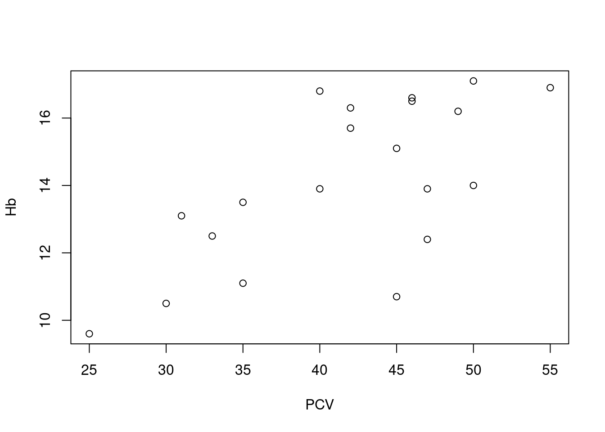
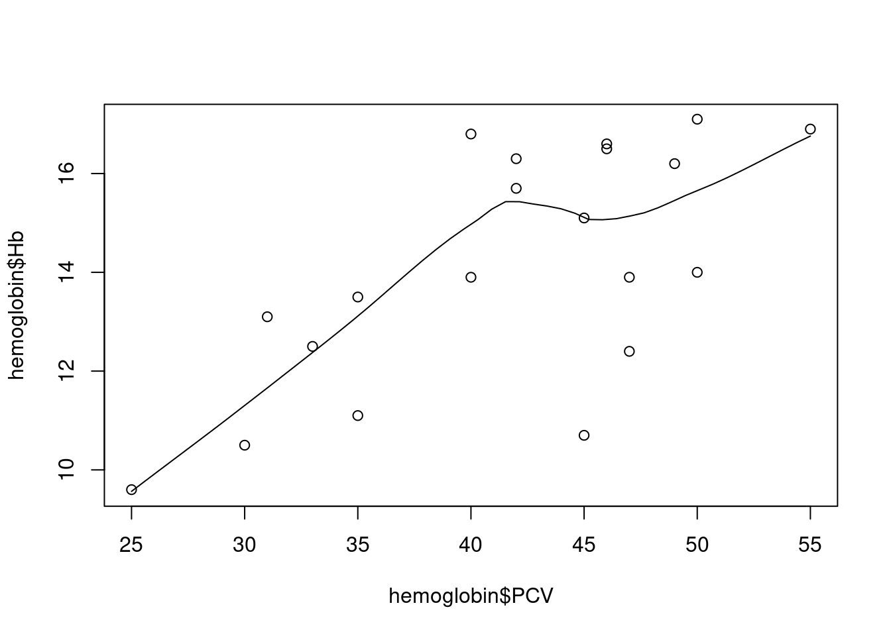
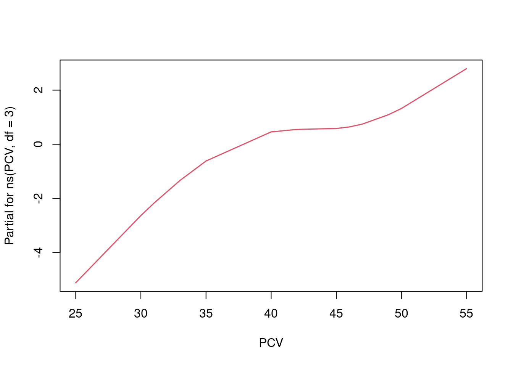

9 Linear regression
9.1 Overview
We study linear regression as a template for regression modelling in R, and follow the workflow of fitting a simple model to data, extracting relevant information about the fitted model, and making predictions from it. We complement this with some descriptive and diagnostic graphical displays. In the second part, we look at different ways of generalizing to multi-predictor models, including models with interaction terms, dummy coding of discrete (factorial) predictors, and spline terms.
For our examples, we use data from a small clinical study, where 20 women provided blood samples which were analysed for hemoglobin level (in g/dl) and packed cell volume (PCV, in %). The results, together with age and menopausal status of the women, are recorded in file Hemoglobin.txt which has been imported into a R as data frame hemoglobin.
> str(hemoglobin)
'data.frame': 20 obs. of 4 variables:
$ Hb : num 11.1 10.7 12.4 14 13.1 10.5 9.6 12.5 13.5 13.9 ...
$ PCV : int 35 45 47 50 31 30 25 33 35 40 ...
$ Age : int 20 22 25 28 28 31 32 35 38 40 ...
$ Menopause: Factor w/ 2 levels "No","Yes": 1 1 1 1 1 1 1 1 1 2 ...The primary question of interest is how hemoglobin levels vary as a function of PCV, possibly adjusted for the other variables.
9.2 Background
Linear regression in itself is not the most common class of regression models used in epidemiology. However, all common models like logistic regression or Cox proportional hazard models, as well as many other models (Poisson, log-binomial, negative binomial, flexible parametric survival etc.) generalize the same basic idea that at some specific scale, the relationship between outcome and predictor(s) is linear - in other words, a constant increase in a predictor leads to a constant and proportional change in an outcome, or risk of an outcome. This assumption is intuitive, visually attractive, and often at least approximately and/or locally appropriate.
Part of the appeal is that simple linear regression models with only one predictor can easily be extended to include multiple predictors. Conceptually, this is a big step in epidemiology, as it allows discussing and addressing confounding through adjustment, but from a model building perspective, the principle is straightforward: we have an outcome of interest on the left hand side of an equation, and a weighted sum of predictors on the right hand side, and we want to choose the weights for the predictors so that the two sides agree as closely as possible. In this setting, new predictors enter the equation on a democratic basis: each gets their own parameter, and is otherwise allowed to contribute to the right hand side in exactly the same manner as all other predictors.44
These attractive properties have motivated the definition of many derived models, including those listed above: we take a suitably transformed outcome (not necessarily continuous) and relate it to a suitably transformed weighted sum of predictors, where the nature of the relationship is determined by the (assumed) probability distribution of the outcome. This often manages to preserve much of the original linear model goodness.
Important for our purposes, this holds not only on an abstract mathematical level, but quite generally also for the implementation and interface of models in statistical software. The core concept in R is the specification of a model relationship through a formula that relates a dependent left hand side to one or several predictors on the rioght hand side of the model equation.
9.3 Simple linear regression
The equation below shows the most basic situation mathematically, though the terminology often varies: we want to relate a dependent variable (or outcome, or response, commonly referred to as \(y\)) to one independent variable (or predictor, or covariate, commonly referred to as \(x\)). We can write this as \[ y_i = \beta_0 + \beta_1 x_i + \epsilon_i \] where the index \(i\) refers to an observation (\(i \in 1\ldots n\)), \(\beta_0\) and \(\beta_1\) are regression coefficients or parameters of the model (corresponding to intercept and slope of the regression line), and \(\epsilon_i\) is a subject-specific random variable (‘error’) generally assumed to be (approximately) normally distributed with mean 0 and some unknown but fixed variance \(\sigma^2\).
9.3.1 Looking at the data
The canonical display of a simple linear regression is the scatterplot, where by convention the dependent variable is plotted on the vertical axis:
> plot(Hb ~ PCV, data = hemoglobin)
Here we see a reasonable, but not excessively strong linear relationship between PCV and hemoglobin levels, though this can be somewhat difficult to assess visually based on just a few observations. Note how the plot is specified via a formula relating a left hand side (Hb) to a right hand side (PCV), where the operator ~ should be read as “as function of”, in the same manner as for boxplots (as described in Section @ref(ex_desc_stats).
R also has the specialized function scatter.smooth, which adds a useful graphical summary of the relationship between x and y, a so-called smoother or smoothing function:
> scatter.smooth(hemoglobin$PCV, hemoglobin$Hb) The smoothing line here45 tries to follow the shape of the association between the two variables. Technically, this is done via fitting regression lines locally, in a moving window, as the animation below demonstrates: at each point, we only use the black, non-shaded points to fit a linear regression between outcome and predictor; moving that window along the predictor variable on the horizontal axis and connecting the predictions from the local regression models, we get a smoothly varying curve that visually summarizes the association.
](figures/loess.gif)
Figure 9.1: Animated loess smooth example (Source)
For our example above, we see a mostly linear and increasing association, with a bit of a bump in the middle. At first glance, a linear regression model seems like an acceptable working hypothesis.
9.3.2 Fitting a linear regression model
This is the easy part: we simply pass the same formula as above to function lm (for linear model):
> lm1 <- lm(Hb ~ PCV, data = hemoglobin)Printing the linear model object however is not very rewarding:
> lm1
Call:
lm(formula = Hb ~ PCV, data = hemoglobin)
Coefficients:
(Intercept) PCV
5.5885 0.2048 All we see is the original call to lm, including the specified formula, and the estimated regression coefficients (referred to as \({\hat \beta}_0\) and \({\hat \beta}_1\) in statistics). However, we have already seen that the actual content of an object and what R prints at the command line are not necessarily the same thing - under the hood, lm1 is a complex named list:
> is.list(lm1)
[1] TRUE
> names(lm1)
[1] "coefficients" "residuals" "effects" "rank" "fitted.values" "assign"
[7] "qr" "df.residual" "xlevels" "call" "terms" "model" The very general idea of model fitting in R is that we use a function (of course) to fit the model, save the resulting fit to an object (naturally), and then use a series of helper functions to extract whatever information we are interested in from that object: in the same way that we will use the formula notation to specify a model equation for the fitting function, regardless of model type, we also use the same set of helper functions as below for extracting information across different model types.
9.3.3 Regression table and inference
The standard way to generate a standard display of a fitted regression model in R is via the function summary: when applied to a regression model, it will generate a table of regression coefficients, but also important statistics and measures for the model as a whole:
> summary(lm1)
Call:
lm(formula = Hb ~ PCV, data = hemoglobin)
Residuals:
Min 1Q Median 3Q Max
-4.1062 -1.2542 0.2228 1.3244 3.0180
Coefficients:
Estimate Std. Error t value Pr(>|t|)
(Intercept) 5.58853 2.24514 2.489 0.02282 *
PCV 0.20484 0.05301 3.864 0.00114 **
---
Signif. codes: 0 '***' 0.001 '**' 0.01 '*' 0.05 '.' 0.1 ' ' 1
Residual standard error: 1.824 on 18 degrees of freedom
Multiple R-squared: 0.4534, Adjusted R-squared: 0.4231
F-statistic: 14.93 on 1 and 18 DF, p-value: 0.001136We see four different blocks of output, of different levels of general interest; starting at the top:
the call, which is as before just the original function call to
lm, including the model formula; helpful to keep things orderly when you fit and summarize many different models, possibly with different outcomes (as this is the only place where the response variable is shown), but I usually skip over this part;some numerical information on the model residuals; the five-number summary of the residuals can give rough impression of how symmetrically they are distributed around the regression line, but even as a dedicated fan of residuals, I generally ignore this, and look at the diagnostic plots below instead;
the regression table: a tabular arrangement of the model parameters, which is the standard way of reporting a fitted model in statistical software. In R, we get the estimated value (
Estimate) for each parameter, the corresponding standard error of the estimate (Std. Error), the derived Wald test statistic (t value, just the estimate divided by the standard error) and the corresponding p-value for the null hypothesis that the true underlying value of the parameter is really zero (Pr(>|t|)).So in our specific case, the regression model for hemoglobin as a function of PCV has an estimated intercept of ca. 5.6 g/dl and an estimated slope of ca. 0.20 (g/dl)/%: in other words, the average hemglobin level increases by ca. 0.20 g/dl for each extra % of PCV in the blood. The corresponding p-values for the two parameters are below the usual cutoff of 0.05, so we can conclude in the usual manner that both are statistically significantly different from zero. 46
A final block with information relating to the model as a whole (instead of individual regression parameters): the residual standard error is just the estimated standard deviation of the error term \(\epsilon\); the coefficient of determination \(R^2\) estimates the proportion of variance in the dependent variable that is explained by the regression model - the adjusted \(R^2_{adj}\) does the same, but takes into account the number of predictor variables in the model (more powerful models with more predictors get their adjusted \(R^2\) deflated). Finally, we have an F-test for the null hypothesis that the regression model as a whole does not explain the response variable better than the simple mean of the response (i.e. an intercept-only model, where the slope of the predictor is zero).47
For the current simple regression model with one predictor, that is a bit of an overkill: \(R^2\) and \(R^2_{adj}\) agree that ca. 42-45% of the variance of the hemoglobin values is explained by the model. The F-test allows us to reject the null hypothesis that the association between the hemoglobin level and PCV is a flat line; a closer look shows that the p-value for the F-test is the same as for the t-test for the predictor variable, and an even closer look will show that the reported value of the F-statistic is just the square of the t-statistic - this doesn’t add anything for a simple one-predictor model, but can be useful for multi-predictor models, as discussed below.
Note that many other statistical software like e.g. Stata will include confidence intervals for the regression parameters in the regression table. In R however, we have to invoke the separate function confint to calculate them:
> confint(lm1)
2.5 % 97.5 %
(Intercept) 0.87166891 10.305386
PCV 0.09347255 0.316202For the more mathematically minded, note that we can directly extract the vector of parameter estimates\({\hat \beta} = ({\hat \beta}_0, {\hat \beta}_1)\) and the corresponding variance-covariance matrix from the fitted model:
> coef(lm1)
(Intercept) PCV
5.5885273 0.2048373
> vcov(lm1)
(Intercept) PCV
(Intercept) 5.0406414 -0.1170282
PCV -0.1170282 0.0028098The returned objects are indeed a vector and matrix as R understands them, and can be used for all kinds of exciting linear algebra, if you are into that kind of thing.
Exercise:
- Calculate 90% and 99% confidence intervals for the regression parameters.
- Verify that the standard errors reported by
summaryare just the square-roots of the diagonal of the variance-covariance matrix. - Bonus for linear regression aficionados: calculate the \(R^2\) and adjusted \(R^2\) using the functions
varandcor, and the estimated residual standard error from the model fit.
9.3.4 Prediction
Basic prediction Once a model has been fitted, we can use it to make predictions about the expected value of the outcome variable for a given value of the predictor variable. So in terms of the basic equation above, for any value \(x_0\) of the independent variable, we can predict the corresponding expexcted / average value of the dependent variable: \[ {\hat y}_0 = {\hat \beta}_0 + {\hat \beta}_1 \times x_0 \] So we just plug the estimated regression parameters into the regression equation.
In R, we can use the predict-function for this: we specify as input the fitted model, and the value or values of the independent variable for which we want to make a prediction. As an example, for our example model lm1, we want to predict the average hemoglobin level at 25%, 30%, 35%, … 55% PCV (covering the range of observed PCV values with a equidistant set of points). We can do this manually, using the function c, or we can take a shortcut by using the function seq:
> x <- seq(from = 25, to = 55, by = 5)
> x
[1] 25 30 35 40 45 50 55In order to make a prediction from the regression model, these values need to be stored as a column in a data frame, where the name of the column is exactly the same as the name of the predictor variable:
> target <- data.frame(PCV = x)
> target
PCV
1 25
2 30
3 35
4 40
5 45
6 50
7 55Now we can pass the fitted model and the target data frame to predict, and we get a vector of predicted hemoglobin levels back:
> pr1 <- predict(lm1, newdata = target)
> pr1
1 2 3 4 5 6 7
10.70946 11.73365 12.75783 13.78202 14.80620 15.83039 16.85458 Now we have everything in place, the fitted model and the target data frame, so we can feed these to the function predict; we choose a confidence interval for the predicted mean, via argument interval, and this is what we get: a rectangular arrangement of numbers, just like a data frame, with one row per prediction, with the predicted value followed by the lower and upper end of the confidence interval.
> pr1 <- predict(lm1, newdata = target, interval = "confidence")
> pr1
fit lwr upr
1 10.70946 8.666744 12.75218
2 11.73365 10.178721 13.28857
3 12.75783 11.625137 13.89053
4 13.78202 12.905485 14.65855
5 14.80620 13.871471 15.74094
6 15.83039 14.565776 17.09501
7 16.85458 15.138513 18.57064We can now plot or tabulate these predictions, as required.
Prediction uncertainty Because the parameters of the model are estimated and come therefore with uncertainty (expressed as standard error or confidence interval, as seen above), the predictions made above are also uncertain. The predict-function can provide two different types of uncertainty intervals for the predicted estimates:
- confidence intervals, which express the uncertainty about the location of the regression line (i.e. the expected / average value of the outcome),
- prediction intervals, which add the extra uncertainty of making an individual prediction around the expected mean.
Confidence intervals capture the uncertainty about the exact location of the regression line, prediction intervals capture the uncertainty of the location of an individual observation.48
For our example, let’s add confidence intervals to the predictions. This produces a matrix with three columns, corresponding to the prediction, the lower limit of the (by default) 95% confidence interval, and the upper limit of the confidence interval:
> pr2 <- predict(lm1, newdata = target, interval = "confidence")
> pr2
fit lwr upr
1 10.70946 8.666744 12.75218
2 11.73365 10.178721 13.28857
3 12.75783 11.625137 13.89053
4 13.78202 12.905485 14.65855
5 14.80620 13.871471 15.74094
6 15.83039 14.565776 17.09501
7 16.85458 15.138513 18.57064Note how the confidence intervals are narrower close the center of the data, where the regression line can be estimated more reliably, and wider at the ends of the data range, where the exact position of the regression line is less certain.
If we want to tabulate this, we can even combine this with the specified x-values and do some rounding:
> tab_pred <- data.frame(target, round(pr2, 1))
> tab_pred
PCV fit lwr upr
1 25 10.7 8.7 12.8
2 30 11.7 10.2 13.3
3 35 12.8 11.6 13.9
4 40 13.8 12.9 14.7
5 45 14.8 13.9 15.7
6 50 15.8 14.6 17.1
7 55 16.9 15.1 18.6And for a report, we might even want to run this through pander:
> library(pander)
> pander(tab_pred)| PCV | fit | lwr | upr |
|---|---|---|---|
| 25 | 10.7 | 8.7 | 12.8 |
| 30 | 11.7 | 10.2 | 13.3 |
| 35 | 12.8 | 11.6 | 13.9 |
| 40 | 13.8 | 12.9 | 14.7 |
| 45 | 14.8 | 13.9 | 15.7 |
| 50 | 15.8 | 14.6 | 17.1 |
| 55 | 16.9 | 15.1 | 18.6 |
Default prediction As a variation of this approach, we can also call predict without explicitly specifying target values for the predictor. In this case, R will use the observed values of the predictor variable in the data set used for fitting the model (so hemoglobin in our example), and return predictions for these locations:
> predict(lm1)
1 2 3 4 5 6 7 8 9 10 11
12.75783 14.80620 15.21588 15.83039 11.93848 11.73365 10.70946 12.34816 12.75783 13.78202 14.80620
12 13 14 15 16 17 18 19 20
15.21588 15.62555 14.19169 13.78202 15.83039 15.01104 16.85458 14.19169 15.01104 Unless you have an incredibly well designed study, this is usually not very helpful.
Exercises:
- For the same ages as above, make predictions using
interval="confidence"andinterval="predictionand compare the results. - Make the same predictions on the observed predictor values as the “short” form
predict(lm1)produces, but by explicitly specifying a target vianewdata; include a confidence interval, and build a nice prediction table that combines the target values, the predicted values and the confidence intervals.
9.3.5 Diagnostics
UNDER CONSTRUCTION
9.3.6 Binary predictor and dummy coding
Dummy coding We can also use a binary variable as predictor in a simple linear regression model, by using dummy coding: for any variable with two levels, we can generate a dummy variable which haz value zero for one level (the reference level) and one for the other level (sometimes called exposure level). For such a dummy variable \(x_{dummy}\), we can write down the same regression equation as before: \[ y = \beta_0 + \beta_1 \times x_{dummy} + \epsilon \] Note that we can get only two different variants of this equation: [
y = { \[\begin{array}{lr} \beta_0 + \epsilon & \mathrm{iff} \,\, x_{dummy} = 0 \\ \beta_0 + \beta_1 + \epsilon & \mathrm{iff} \,\,x_{dummy} = 1 \end{array}\].
] We generally do not have to do our own dummy coding in R - this is one of the things that the formula notation does for us. However, we still need to understand the concept to understand the output that is generated.
Dummy coding in R Let’s look at our example, which includes menopausal status:
> hemoglobin$Menopause
[1] No No No No No No No No No Yes No Yes Yes Yes Yes Yes Yes Yes Yes Yes
Levels: No YesWe see that Menopause is a factor variable with two levels, No (pre-menopausal) and Yes (post-menopausal). If we want to model the hemoglobin level as a function of menopausal status, we can simply adapt the model formula:
> lm2 <- lm(Hb ~ Menopause, hemoglobin)
> summary(lm2)
Call:
lm(formula = Hb ~ Menopause, data = hemoglobin)
Residuals:
Min 1Q Median 3Q Max
-2.650 -1.250 0.280 0.865 2.850
Coefficients:
Estimate Std. Error t value Pr(>|t|)
(Intercept) 12.2500 0.4695 26.093 9.36e-16 ***
MenopauseYes 3.7400 0.6639 5.633 2.41e-05 ***
---
Signif. codes: 0 '***' 0.001 '**' 0.01 '*' 0.05 '.' 0.1 ' ' 1
Residual standard error: 1.485 on 18 degrees of freedom
Multiple R-squared: 0.6381, Adjusted R-squared: 0.6179
F-statistic: 31.73 on 1 and 18 DF, p-value: 2.41e-05We see the same overall summary-output as above, including information on the function call and residuals, the regression table, and the extra model statistics. The only place where we realize that we have dependent variable that is a factor is in the regression table:
Estimate Std. Error t value Pr(>|t|)
(Intercept) 12.20 0.469 26.10 9.36e-16
MenopauseYes 3.74 0.664 5.63 2.41e-05The first row with the (Intercept) has the same structure as before, but the second row shows not only the name of the variable (Menopause), but the variable name with the exposure level added to it: MenopauseYes. This shows us that the parameter in this row (\({\hat \beta}=3.74\)) refers to a dummy variable, and specifically, a dummy variable which is equal to one when the variable Menopause is equal to Yes. The reference level on the other is not shown - we have to understand from our inspection of the data that that is the complementary level No.
Changing the reference level By default, R will use the first level of a factor variable as the reference level.49 We can change the parametrization of the regression model by changing the order of factor levels using the function relevel:
> hemo2 <- hemoglobin
> hemo2$Menopause <- relevel(hemo2$Menopause, ref = "Yes")
> hemo2$Menopause
[1] No No No No No No No No No Yes No Yes Yes Yes Yes Yes Yes Yes Yes Yes
Levels: Yes NoYes is now the first factor level in the modified data set; if we re-fit the model for the modified data, we get this:
> summary(lm(Hb ~ Menopause, hemo2))
Call:
lm(formula = Hb ~ Menopause, data = hemo2)
Residuals:
Min 1Q Median 3Q Max
-2.650 -1.250 0.280 0.865 2.850
Coefficients:
Estimate Std. Error t value Pr(>|t|)
(Intercept) 15.9900 0.4695 34.059 < 2e-16 ***
MenopauseNo -3.7400 0.6639 -5.633 2.41e-05 ***
---
Signif. codes: 0 '***' 0.001 '**' 0.01 '*' 0.05 '.' 0.1 ' ' 1
Residual standard error: 1.485 on 18 degrees of freedom
Multiple R-squared: 0.6381, Adjusted R-squared: 0.6179
F-statistic: 31.73 on 1 and 18 DF, p-value: 2.41e-05Looking at the regression table, we see that this has worked as intended: the second row now has the name MenopauseNo, so the new exposure level is now No and the reference level is Yes. However, it is at least as instructive to check what has not changed:
- looking at the regression table again, we find that the slope estimate for
MenopauseNois just the negative value for the slope estimate forMenopauseYes; and apart from the sign, the estimate, standard error, t-statistic and p-value are all the same. The intercept has a different estimate, but the same standard error. - looking at the residuals and the model summary statistics like residual standard error, \(R^2\) etc., we find them to be identical. This is of course not an accident - the re-parametrization we have performed changes the interpretation of the parameters (that was the actual point to start with), but not the model fit: the old and the new model have the same predictions and the same residuals, and are indeed the same model, apart from the parameter interpretation.
Prediction This works as before, using the predict-function. Note however that we only get two different estimates, corresponding to the two forms of the dummy-coded regression equation:
> predict(lm2)
1 2 3 4 5 6 7 8 9 10 11 12 13 14 15 16
12.25 12.25 12.25 12.25 12.25 12.25 12.25 12.25 12.25 15.99 12.25 15.99 15.99 15.99 15.99 15.99
17 18 19 20
15.99 15.99 15.99 15.99 And it turns out that these two distinct replicated values are just the average hemoglobin levels in each group. So for real application, having a simple linear regression model with one binary predictor is not especially interesting - that comes when we have more than two levels in a discrete predictor and / or multiple predictor variables in the model (see also Exercise 1 below).
Exercises:
A linear model with just one binary predictor like here is mathematically equivalent to a Student t-test:
> t.test(Hb ~ Menopause, data = hemoglobin, var.equal = TRUE)Run this test in R, and identify all points where the test output and the regression summary agree.
For the linear model with the re-leveled menopausal variable, can you write the complete process (releveling the factor variable, fitting the linear model, extarting the summary) in one row of R code (e.g. as nested function calls or as pipeline)?
9.3.7 Nicer regression tables
We can use pander also for regression models. Directly applied to the fitted model, we get the regression table:
> pander(lm1)| Estimate | Std. Error | t value | Pr(>|t|) | |
|---|---|---|---|---|
| (Intercept) | 5.589 | 2.245 | 2.489 | 0.02282 |
| PCV | 0.2048 | 0.05301 | 3.864 | 0.001136 |
We can also apply pander to the summary of a fitted model, which shows both the regression table and some model statistics:
> pander(summary(lm1))| Estimate | Std. Error | t value | Pr(>|t|) | |
|---|---|---|---|---|
| (Intercept) | 5.589 | 2.245 | 2.489 | 0.02282 |
| PCV | 0.2048 | 0.05301 | 3.864 | 0.001136 |
| Observations | Residual Std. Error | \(R^2\) | Adjusted \(R^2\) |
|---|---|---|---|
| 20 | 1.824 | 0.4534 | 0.4231 |
9.4 Multiple linear regression
9.4.1 Multiple predictors
In epidemiology, the final model in an analysis will rarely be a simple regression model with only one predictor: generally, there will be an attempt to adjust the estimated association between the main exposure and an outcome of interest for confounding by including the potential confounding variables as additional predictors in the model.
In our example, we can consider age and menopausal status as such potential confounders. Including them in the model just requires adding them to the right hand side of the model formula
> lm3 <- lm(Hb ~ PCV + Age + Menopause, data = hemo)
> summary(lm3)
Call:
lm(formula = Hb ~ PCV + Age + Menopause, data = hemo)
Residuals:
Min 1Q Median 3Q Max
-1.6011 -0.6784 0.2155 0.5463 1.7589
Coefficients:
Estimate Std. Error t value Pr(>|t|)
(Intercept) 5.21455 1.57182 3.318 0.00436 **
PCV 0.09734 0.03459 2.815 0.01246 *
Age 0.11103 0.03033 3.661 0.00211 **
MenopauseYes -0.02407 0.95401 -0.025 0.98018
---
Signif. codes: 0 '***' 0.001 '**' 0.01 '*' 0.05 '.' 0.1 ' ' 1
Residual standard error: 1.01 on 16 degrees of freedom
Multiple R-squared: 0.8512, Adjusted R-squared: 0.8233
F-statistic: 30.51 on 3 and 16 DF, p-value: 7.464e-07Call- and residual information still have the same appearance, but the regression table has now additional rows for the new predictors. Compared to the unadjusted model above, we see that the effect size (\({\hat \beta}\), slope) for the exposure PCV has been reduced by half (ca. 0.10 vs 0.20), but is still statistically significantly different from zero (\(p=0.02\)). We also see that among the covariates, age is robustly and statistically significantly associated with hemoglobin level: an age increase by one year is associated with a comparable increase of the outcome as an increase of the PCV-level by 1%. Interestingly, menopausal status is not statistically significantly associated with hemoglobin level in the adjusted model, with \(p=0.98\) and a very small effect size - it seems that the association we saw above for lm2 was due to confounding by age.
Note that the adjusted model explains most of the variability in the data, with an adjusted \(R^2=82\%\). We also see that now, the null hypothesis of the F-test can be interesting: namely that the model as a whole (i.e. including all three predictors) does not fit the data better than a simple constant mean model (i.e. that all three slope parameters are zero at the same time). We can reject this hypothesis at \(p=7.5E-7\): we have cealry stronger evidence against the joint null hypothesis of the F-test than for the per-parameter null hypothesis for each of the parameters in the regression table.
Note that the other helper functions we have discussed (confint, predict as well as plot) still work in the same manner.50
9.4.2 Categorical predictors with \(>\) 2 levels
Another way of adding more parameters than just intercept and slope to a regression models is by using a discrete predictor variable with more than two levels: we still get to choose one level as reference level, but then we have to add one dummy variable for each remaining level of the factor.
For our example, we may want to categorize age by splitting to into three approximately equally big groups.51 We can use the function quantile to identify reasonable categories:
> quantile(hemoglobin$Age, probs = c(0.33, 0.67))
33% 67%
32.81 54.73 So we could e.g. split the data at 35 and 55 years of age (to nicer limits):
> hemoglobin <- transform(hemoglobin, Age_gr = cut(Age, c(0, 33, 55, 99)))
> table(hemoglobin$Age_gr)
(0,33] (33,55] (55,99]
7 7 6 That is nicely balanced, so this should make a reasonable predictor:
> lm4 <- lm(Hb ~ Age_gr, data = hemoglobin)
> summary(lm4)
Call:
lm(formula = Hb ~ Age_gr, data = hemoglobin)
Residuals:
Min 1Q Median 3Q Max
-2.0286 -0.9071 -0.0500 0.6536 2.3714
Coefficients:
Estimate Std. Error t value Pr(>|t|)
(Intercept) 11.6286 0.4879 23.836 1.67e-14 ***
Age_gr(33,55] 2.8571 0.6899 4.141 0.000683 ***
Age_gr(55,99] 4.9714 0.7181 6.923 2.46e-06 ***
---
Signif. codes: 0 '***' 0.001 '**' 0.01 '*' 0.05 '.' 0.1 ' ' 1
Residual standard error: 1.291 on 17 degrees of freedom
Multiple R-squared: 0.7416, Adjusted R-squared: 0.7112
F-statistic: 24.4 on 2 and 17 DF, p-value: 1.01e-05As before, this only changes the shape of the regression table:
Estimate Std. Error t value Pr(>|t|)
(Intercept) 11.60 0.488 23.80 1.67e-14
Age_gr(33,55] 2.86 0.690 4.14 6.83e-04
Age_gr(55,99] 4.97 0.718 6.92 2.46e-06We now have two rows where the parameter name is constructed as variable name + exposure level: Age_gr(33,55] and Age_gr(55, 99], each corresponding to a dummy variable for the exposure level given in the parameter name. As before, the reference level is by default the first level of the factor predictor, and is not shown explicitly in the regression table (we just happen to know that it is (0,33] from before). Note we have a nice and increasing trend with age: for the reference group, the average hemoglobin level is ca. 11.6 g/dl, which increases by ca. 2.9 g/dl for the 33-55 year old women, and by ca. 5.00 g/dl for the women over 55 (again relative to the reference group).
9.4.3 Interactions
If we already more at least two predictors in a model, we can include interaction terms between that allows to easily test for effect modification. In the formula notation, we can use a * between two (or more) predictors to indicate that we want to include both predictors and their interaction.
In our example, we may be interested to know if the association between PCV and hemoglobin level is the same for pre- and post-menopausal women: in other words, whether menopause can be considered an effect modifier for the PCV/hemoglobin association.
> lm_ia = lm(Hb ~ PCV * Menopause, data = hemoglobin)
> summary(lm_ia)
Call:
lm(formula = Hb ~ PCV * Menopause, data = hemoglobin)
Residuals:
Min 1Q Median 3Q Max
-2.3788 -0.8998 0.2202 0.7357 2.0212
Coefficients:
Estimate Std. Error t value Pr(>|t|)
(Intercept) 8.03861 2.06697 3.889 0.0013 **
PCV 0.11200 0.05376 2.084 0.0536 .
MenopauseYes 3.86862 4.79874 0.806 0.4320
PCV:MenopauseYes -0.02267 0.10854 -0.209 0.8372
---
Signif. codes: 0 '***' 0.001 '**' 0.01 '*' 0.05 '.' 0.1 ' ' 1
Residual standard error: 1.367 on 16 degrees of freedom
Multiple R-squared: 0.7273, Adjusted R-squared: 0.6762
F-statistic: 14.23 on 3 and 16 DF, p-value: 8.878e-05As we can see in the regression table, we now have three non-intercept covariates in the model:
- a main effect term for PCV, which is a continuous predictor;
- a main effect term for menopausal status, which is coded as a dummy variable with exposure level
Yes; - an interaction term between the two variables, indicated by the colon
:between the two main effect parameter names.
UNDER CONSTRUCTION Interactions are tricky beasts, and I won’t go into too much detail here; as a general rule, if in doubt, always write down the regression equation, including any dummy variables, and set the interaction variables to the actual arithmetic product of the contributing main effect variables: in our example, the variable corresponding to PCV:MenopauseYes has the same value as PCV whenever the menopausal status dummy is zero (i.e. pre-menopausal/reference level) and zero otherwise. This can then be used to understand which parameter contributes to the mean of which combination of exposure levels.
For the current example, we only have one interaction parameter. The corresponding null hypothesis is that the slope for the association between PCV and hemoglobin level is the same for pre- and post-menopausal women; given the rather large \(p=0.84\), we conclude that this data set does not procide sufficient evidence to reject this null hypothesis - in other words, there is no statistically significant interaction between PCV and menopausal status, and we prefer model lm1 over model lm4 here.
9.4.4 Splines
Despite the name, we can use linear regression models for what are apparently “non-linear” associations between a predictor and an outcome variable, by adding transformations of the predictor variable to the model. The simplest case is a quadratic regression model: \[ y = \beta_0 + \beta_1 \times x + \beta_2 \times x^2 \] Despite being a multi-predictor linear regression model (with predictors \(x\) and \(x^2\)), this model can clearly capture associations between \(x\) and \(y\) that do not follow a straight line.52
A more general variant of this idea (using multiple transformations of the same underlying variable as predictors) can be implemented via so-called spline terms. These are smoothing functions similar to the loess smoother we have seen in sub-section 9.3.1, but designed to be included in a regression model rather than just for visual representation. Like the loess curves, splines have the ability to summarize a curvilinear relationship between two variables with a smooth curve.
In our example, we can add such a spline term via function ns in package splines. We simply apply ns to the variable for which we want to have a spline term include, in our case PCV:
> require(splines)
> lm_spl <- lm(Hb ~ ns(PCV, df = 3), data = hemoglobin)The second argument to ns are the degrees of freedom, which is the number of transformed variables (and therefore the number of regression parameters) that will be included in the model for the relationship between PCV and hemoglobin level; generally speaking, the more degrees of freedom we add, the more closely the curve will follow the data, and the fewer we use, the stronger the spline term will smooth out local variability. For our small data set, three degrees of freedom is seems like a suitable starting point.
Let’s look at the summary:
> summary(lm_spl)
Call:
lm(formula = Hb ~ ns(PCV, df = 3), data = hemoglobin)
Residuals:
Min 1Q Median 3Q Max
-4.0040 -0.9718 0.1967 1.2750 2.2215
Coefficients:
Estimate Std. Error t value Pr(>|t|)
(Intercept) 9.003 1.546 5.824 2.59e-05 ***
ns(PCV, df = 3)1 3.340 1.435 2.328 0.03334 *
ns(PCV, df = 3)2 12.340 3.829 3.223 0.00531 **
ns(PCV, df = 3)3 4.548 1.720 2.644 0.01770 *
---
Signif. codes: 0 '***' 0.001 '**' 0.01 '*' 0.05 '.' 0.1 ' ' 1
Residual standard error: 1.821 on 16 degrees of freedom
Multiple R-squared: 0.516, Adjusted R-squared: 0.4253
F-statistic: 5.686 on 3 and 16 DF, p-value: 0.007581We get a typical regression output; the regression table shows four parameters verall, one intercept and three spline parameters, easily recognized by their name, and all of them statistically significantly different from zero at the usual \(\alpha = 0.05\). However, and this is one the disadvantages of spline variables, it is not really possible to interpret what they mean in terms of the underlying problem.
It is more interesting to plot the association between PCV and hemoglobin levels that the spline variables describe, which we can do via the functionn termplot:
> termplot(lm_spl) We see that the spline curve actually captures the same small bump in the middle of the scatterplot that we have seen from the loess curve above.
Exercise: You can experiment with ns(PCV, df=k) and termplot to study the shape of the spline curve for different values \(k\) as degrees of freedom. What happens if you increase \(k\)? When you decrease it? Is the expression “overfitting” appropriate in any setting?
9.4.5 Model comparisons
We are reasonably often interested in comparing two regression models for the same data. If the two models are nested, i.e. all predictors variables of the smaller model are also included in the larger model, we can use an F-test to test the null hypothesis that both models explan the data equally well (i.e. the larger model does not contribute anything extra), via the function anova.
For our example, we may be interested in comparing the model with a simple linear association between PCV and hemoglobin level (lm1) and the spline model we have just fitted in the previous sub-section:53
> anova(lm1, lm_spl)
Analysis of Variance Table
Model 1: Hb ~ PCV
Model 2: Hb ~ ns(PCV, df = 3)
Res.Df RSS Df Sum of Sq F Pr(>F)
1 18 59.910
2 16 53.051 2 6.8595 1.0344 0.378Given the fairly large \(p=0.38\), we do not want to reject the null hypothesis here, and conclude that based on the evidence in our small sample, a linear relationship is appropriate here.
If the two models we want to compare are not nested (i.e. both models include at leats one predictor that is not part of the other model), we can use Akaike’s Information criterion (AIC): the AIC is a numerical measure for how well a model fits a data set which takes into account the number of predictors / regression coefficients used for the model, where smaller values indicate better fit.
If we want to compare the fully adjusted model lm3 and the interaction model lm_ia, which are clearly not nested, we can look at their AICs:
> AIC(lm3)
[1] 62.67548
> AIC(lm_ia)
[1] 74.79201Seeing that lm3 has a clearly lower AIC, we would prefer lm3 over lm_iahere.
Exercise: Compare the \(R^2\)- and adjusted \(R^2\)-values for models lm1 and lm_spl. In the light of the anova-results above, which value seems to describe the actual model fit better?
9.5 Technical notes
This is a very different for non-linear models… of which we will otherwise not talk.↩︎
The smoothing function used by
scatter.smoothand demonstrated above is called loess, or locally estimated scatterplot smoother, and is primarily used for graphical summaries as shown here.↩︎Note that R also provides a very old-fashioned
*-notation for the p-values, together with a legend explaining the notation. This is archaic and should beburned with fireignored.↩︎Actually, we can fit an intercept-only model using the formula
Hb ~ 1if we want to. As it happens, this a complicated way of estimating the mean hemoglobin level with a confidence interval.↩︎So with an increasing sample size, the width of the confidence intervals will converge to zero, because we have more and more information about the location of the regression line, but the width of the prediction interval will converge to ca. \(4\times \sigma\), or four times the residual standard error, because even if we know exactly where the regression line is, the individual points are going to be randomly scattered around it because of the error term \(\epsilon\).↩︎
You can see the ordering of the factor levels in different ways: e.g. simply by displaying the factor variable in the console (
hemoglobin$Menopause) lists the factors in order at the bottom; you can use the functionlevel(as inlevel(hemoglobin$Menopause)) to extract only the levels, and when you tabulate the factor, the counts will also be presented in the order of the levels (table(hemoglobin$Menopause)).↩︎Of course, if we want to predict the outcome, we now have to specify values for all predictor variables in the model in the data frame passed to
predict.↩︎Not really for this data set, but it’s a reasonable demonstration for categorizing a continuous variable, which is something that epidemiologists tend to do a lot… probably too much, actually: often a spline term will be a superior solution.↩︎
I find it useful to speak in this situation of a curvilinear rather than a non-linear relationship, but not everybody agrees.↩︎
It’s not obvious, but a linear term for a model (like \(\beta \times PCV\)) is always nested in the corresponding spline term for the same variable (i.e.
ns(PCV, df=k)for any \(k>0\)), so this is a test we can always do.↩︎